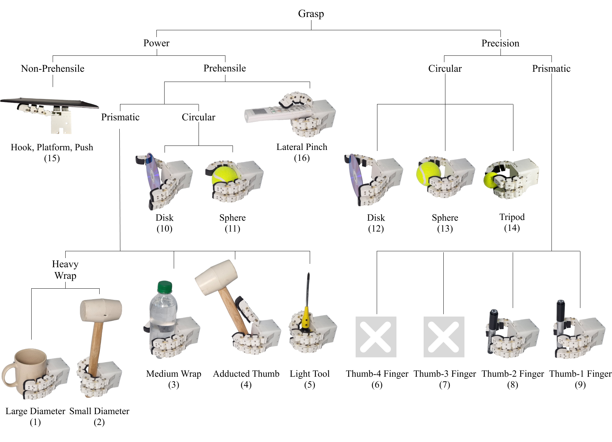

Abstract
Robotic hands are central to a wide range of manipulation tasks, enabling human-like dexterity and adaptability. However, achieving such functionality with minimal actuation and reduced mechanical complexity remains a key challenge. Conventional approaches often rely on complex actuation mechanisms, resulting in increased system weight and limited integration flexibility.
This study presents a lightweight, underactuated three-fingered robotic hand that incorporates tendon-driven actuation and compliant joint structures. A shared tendon-routing scheme enables synchronized finger flexion with a single actuator, while passive restoring forces are provided by rolling contact joints and elastic ligaments, removing the need for antagonistic actuation. All actuation components are embedded within the hand, resulting in a compact and portable configuration.
Grasp & Object Taxonomy
LUTA Hand가 지원하는 파지 유형(Pinch grasp, Power grasp 등)과 다양한 기하학적 형상을 가진 대상 물체들의 분류 체계(Taxonomy)입니다. 단일 제어 입력만으로도 물체의 크기와 형태에 따라 파지 모드가 자연스럽게 전환됩니다.

Experimental Evaluation
1. Kinematic & Motion Test
단일 액추에이터를 통한 세 손가락의 동기화된 굴곡(Flexion) 및 롤링 콘택트 조인트의 복원력을 검증하여 일관된 모션 궤적을 확인했습니다.
2. Passive Adaptation Test
물체 접촉 시 텐던 이동량이 비접촉 손가락으로 재분배되는 메커니즘을 평가하여, 별도 센서 없이 형상에 수동 적응하는 능력을 검증했습니다.
3. Static Grasping Evaluation
다양한 크기, 무게, 재질을 가진 정적 물체들을 안정적으로 파지하고 유지할 수 있는 지지력과 파지 안정성을 정량화했습니다.
4. Dynamic Manipulation (Pick & Place)
실시간으로 물체를 집어 올린 후 지정된 위치로 이동시키는 동적 환경 테스트를 통해 실제 작업 환경에서의 활용성을 입증했습니다.
Real-time Pick and Place
물체별 정밀 파지 및 이동 시연 영상
Object 1 (예: Cylinder)
Object 2 (예: Sphere)
Object 3 (예: Box)
Object 4 (예: Complex Shape)
Object 5 (예: Soft Object)
Object 6 (예: Tiny Object)
Full Supplementary Video
전체 실험 및 메커니즘 소개가 포함된 통합 영상
BibTeX
@article{byun2025lutahand,
title={The LUTA Hand: Development of a Lightweight Underactuated Three-fingered Robotic Hand for Adaptive Grasping},
author={Byun, Seunghwan and Moon, Seongkyeong and Sung, Eunho and You, Seungbin and Park, Yong-Lae and Park, Jaeheung},
journal={International Journal of Control, Automation, and Systems},
volume={23},
number={12},
pages={3547--3562},
year={2025},
publisher={Springer},
doi={10.1007/s12555-025-0545-0}
}